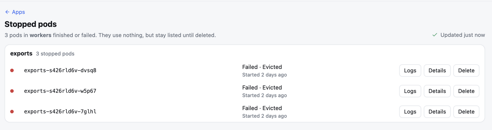

Edit workload YAML, and a calmer stopped-pods page
Change an app's Deployment straight from Kube Console, with a checked diff before anything is applied. Stopped pods now have their own page, and are deleted one at a time.

Edit YAML, review the diff, then apply
Each app has a YAML button that opens its live Deployment (or StatefulSet/DaemonSet). Edit it in place, then Review changes: Kubernetes checks your edit in a dry run and you see exactly what will change before you Apply. The kind, name and namespace stay locked, and an apply is refused if someone deployed in the meantime.

See every stopped pod before you touch it
The stopped pods · View box opens a page listing each finished, failed or evicted pod under its app, with why it stopped and when. Logs and Details are right there, so you can check a pod before deciding.

Delete is one pod at a time
There's no bulk delete any more. Each Delete asks about that one pod, and only a pod that has already stopped can be deleted. On protected clusters you also type the cluster's name.
Improvements
- Protected clusters ask for the cluster name before YAML is applied, and read-only clusters can view YAML but not apply it.
- The apps list no longer has any delete buttons.
- Read-only clusters can view their stopped pods but not delete them.